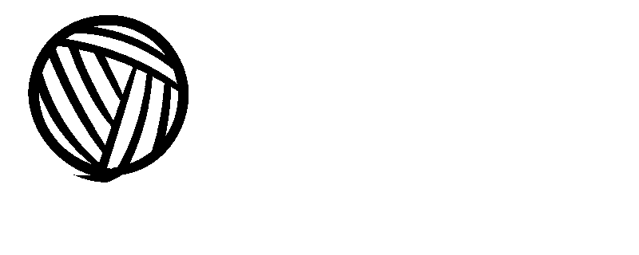
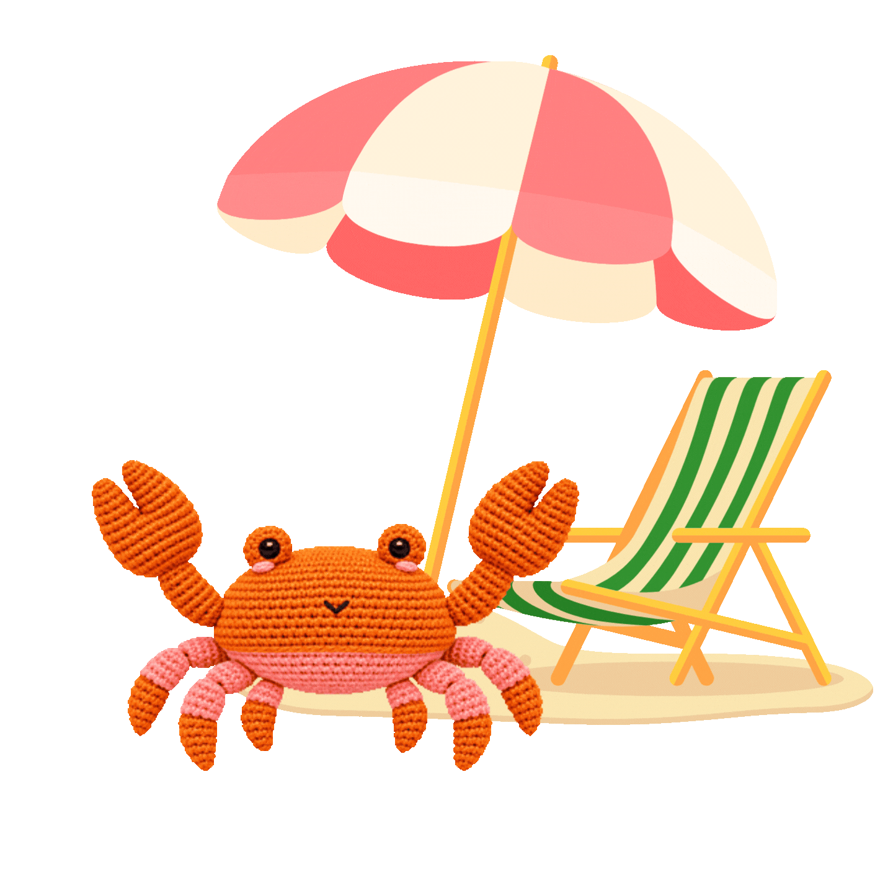

<!doctype html>
<html lang="nl">
  <head>
    <meta charset="UTF-8" />
    <meta name="viewport" content="width=device-width, initial-scale=1.0" />
    <script src="./assets/scripts/theme.js" defer></script>
    <link rel="stylesheet" href="./assets/style/normal.css" />
    <title>Bert de krab</title>
  </head>
</html>

<body>
  <header>
    <nav>
      <a href="index.html">Home</a>
      <a href="haakpatronen.html">Haakpatronen</a>
      <a href="contact.html">Contact</a>
    </nav>

    <h1>Made by Judith</h1>
    
    <form aria-label="Kleurthema">
      <label
        ><input type="radio" name="theme" value="light" checked /> licht</label
      >
      <label><input type="radio" name="theme" value="dark" /> donker</label>
    </form>
    <a href="index.html">Terug naar de homepagina</a>
    
    <h2>Bert de krab</h2>
    <p>
      Bert is een vrolijk krabje met grote oranje scharen, een abrikooskleurige
      buik en acht kleine pootjes. Met haar lieve oogjes en geborduurde glimlach
      brengt ze een beetje strandgevoel in je haakwereld.
    </p>
    <p>
      Het lijf is ongeveer 10 centimeter breed, zonder de scharen. Je haakt het
      van boven naar beneden in één stuk. De oogkassen, scharen en poten maak je
      apart en naai je daarna vast.
    </p>
  </header>

  <main>
    <article>
      <h3>Over Bert</h3>
      <p>
        Dit krabje wordt gehaakt met fijn katoengaren. De oranje bovenkant en
        roze onderkant krijgen een nette overgang door in de voorste en
        achterste lussen te werken.
      </p>
    </article>
    <article>
      <h3>Informatie over het project</h3>
      <ul>
        <li>Breedte: ongeveer 10 cm zonder scharen</li>
        <li>Niveau: gemiddeld tot gevorderd</li>
        <li>Werkwijze: doorgaande rondes met een ovaal begin</li>
        <li>Losse onderdelen: 2 oogkassen, 2 scharen en 8 poten</li>
      </ul>
    </article>
    <article>
      <h3>Benodigdheden</h3>
      <ul>
        <li>1 bol oranje wol</li>
        <li>1 bol roze wol</li>
        <li>Haaknaald 2 mm</li>
        <li>2 veiligheidsogen van 6 mm of borduurgaren voor ogen</li>
        <li>Zwart borduurgaren</li>
        <li>Vulling, steekmarkeerders en spelden</li>
        <li>Stop- of borduurnaald</li>
      </ul>
    </article>

    <article>
      <h3>Technieken die je gebruikt</h3>
      <ul>
        <li>Rond een lossenketting haken</li>
        <li>Magische ring</li>
        <li>Vasten, halve vasten en halve stokjes</li>
        <li>Meerderen en onzichtbaar minderen</li>
        <li>Alleen in voorste of achterste lussen haken</li>
        <li>Van kleur wisselen</li>
        <li>Onderdelen vastnaaien en details borduren</li>
      </ul>
    </article>

    <article>
      <h3>Handige tips</h3>
      <p>
        Markeer het begin van elke ronde en tel regelmatig de steken. De
        getallen tussen vierkante haken geven het eindtotaal van een ronde aan.
      </p>
      <p>
        Plaats de veiligheidsogen voordat je de oogkassen vastnaait. Je kunt de
        ogen ook borduren; werk de draad dan aan de binnenkant weg.
      </p>
    </article>
    <article>
      <h3>Veiligheid</h3>
      <p>
        Wil je Bert aan een baby, jong kind of je hond geven? Gebruik dan geen
        veiligheidsogen. Je kunt de ogen in dat geval met zwart garen borduren.
        Controleer ook of alle onderdelen stevig vastzitten en werk alle losse
        draden goed weg.
      </p>
    </article>

    <article>
      <a href="patroon-bert.html">Bekijk het haakpatroon van Bert</a>
    </article>
  </main>
  <footer>
    <p>Nieuwe sfeerbeelden en animatie: gemaakt met AI.</p>
    <p>Website gemaakt door Judith Boers</p>
  </footer>
</body>
